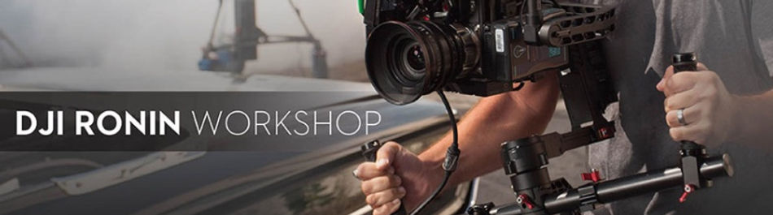
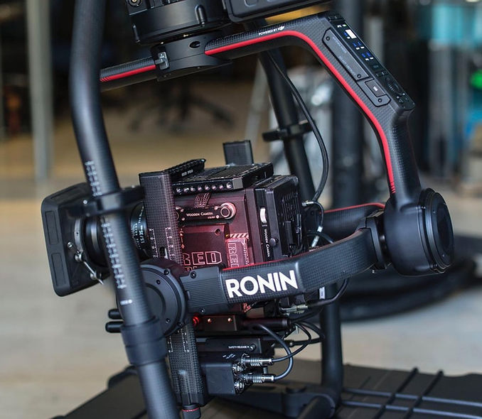
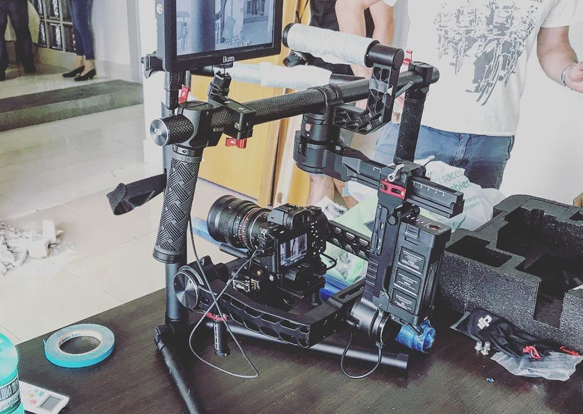
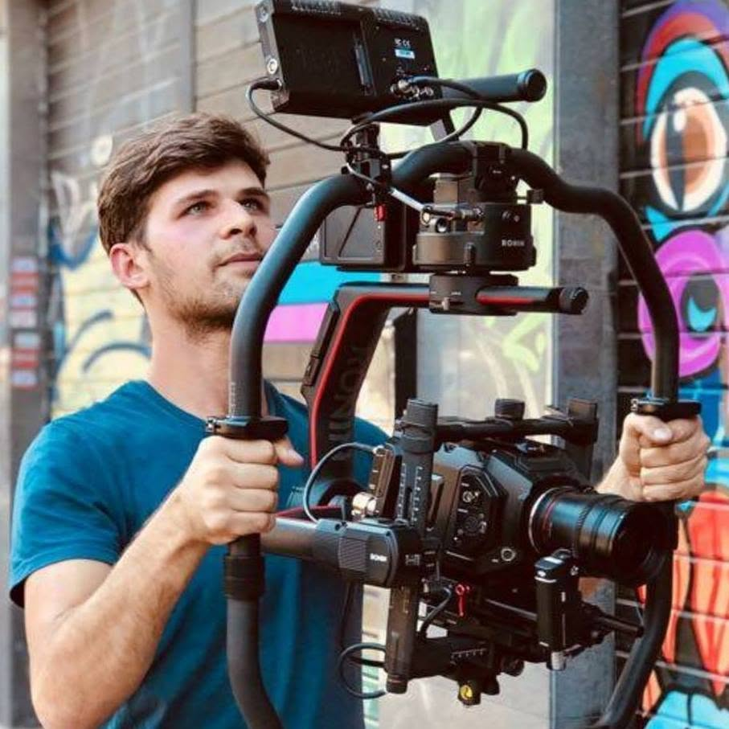

Da Vinci Resolve
A complete course for video editing, transitions, titles, motion effects, audio tools, tracking, color correction and final export for web, multimedia and television distribution.
Recent work for commercials, live events and films as Director of Photography, Cameraman, Technician and Gimbal Operator.
Collaborations in music videos, commercials, corporate videos and web products as Camera Operator, Technician, Gimbal Operator and D.O.P.
Various products directed by Giovanni Altrui and his team for organizations and productions.
Complete production of documentaries for television and digital organizations.
An independent short film.

A complete course for video editing, transitions, titles, motion effects, audio tools, tracking, color correction and final export for web, multimedia and television distribution.

Hands-on sessions with an expert instructor, precision stabilization practice, open comparison between directors and professionals, and iOS/desktop software calibration.

A course for mastering photography and technical camera work with reflex, mirrorless and cinema cameras including Canon, Panasonic, Sony, Blackmagic, FS7 and RED systems.

Giovanni Altrui started as a cameraman and refined his knowledge through the specialist study of film and television disciplines in filmmaking.
After his studies and arrival in Rome, he began working as a freelance professional for several organizations on projects ranging from music videos to short films, commercials and independent films.
Specializations: Filmmaker, Video Operator, DJI Ronin/Gimbal Specialist, D.O.P., Post-Production.